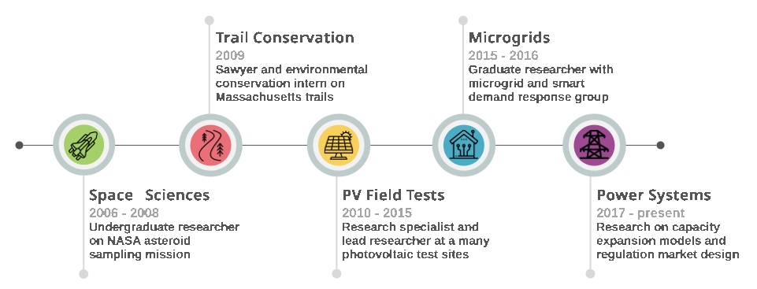
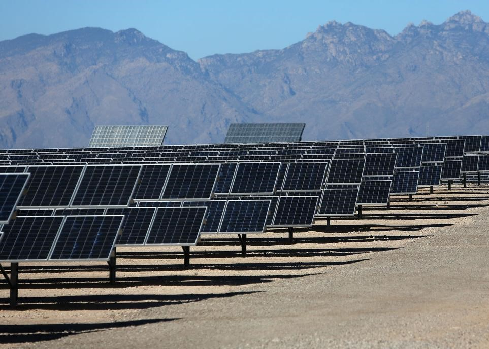

About
Director of Transmission Planning at Grid Strategies
I am Director of Transmission Planning at Grid Strategies, where I help clients achieve well-designed regional transmission systems. Sitting at the intersection of engineering and policy, I have over 15 years of public service experience at the academic, utility, state, and federal levels. My expertise includes power system modeling, industry practices, wholesale electricity markets, state utility regulation, grid technologies, energy justice and labor concerns.
Prior to joining Grid Strategies, I served as a Senior Technical Advisor in transmission planning with the U.S. Department of Energy’s Grid Deployment Office. My portfolio at DOE included national generation and transmission assessments, system reliability studies, renewable energy integration, large load integration, grid- enhancing technologies, transmission permitting, and energy justice. Earlier in my career, I served as a transmission planning engineer at the Public Service Commission of Wisconsin and as a solar energy researcher at the University of Arizona. I had a particular focus in educational outreach for young students.
I hold both an M.S. and Ph.D. in electrical engineering with a focus in energy policy and environmental resources from the University of Wisconsin—Madison. I have a B.S. is in engineering physics from the University of Arizona. At heart, I am a power grid and renewable energy nerd who is happiest when backpacking the nation’s forests. I currently live in Tucson AZ.

Education
University of Wisconsin-Madison
College of Engineering | M.S. Electrical Engineering (2017) | Ph.D. Electical Engineering (2020)
Nelson Institute of Environmental Studies | Energy Analysis and Policy Certificate (2018)
- Wisconsin Distinguished Graduate Fellowship
- NSF Graduate Research Fellowship Program
- Grainger Power Engineering Award
University of Arizona
College of Engineering | B.S. Engineering Physics (2011)
- Arizona Excellence Scholarship for Undergraduate Studies
- Academic Distinction Award



Research & Experience
My research has taken a journey from space exploration to photovoltaic solar field performance and finally to grid power systems. This journey has allowed me to work with many great organizations all across the United States.
August 2020 – Februar 2025 | Washington DC
- Led and advised research projects, including the 2023 National Transmission Needs Study, which requires expert knowledge of the national power system modeling landscape and extensive stakeholder engagement. The Needs Study won “Best Published Research for a General Audience” from the American Energy Society.
- Led and participated in cross-cutting research teams on topics of interest to the White House and Secretary of Interest, including national transmission, data centers, and grid-enhancing technologies.
- Trusted subject matter expert and advisor to external transmission system studies, such as the NERC Interregional Transfer Capability Study and providing expert testimony at FERC technical conferences.
- Provided over one hundred briefings on technical transmission topics to the public, media, industry, and government leadership across the U.S. Briefings were frequently applauded by attendees as clear and engaging.
January 2019 – August 2020 | Madison WI
- Worked with interdisciplinary Office of Regional Markets team on transmission planning and wholesale electricity market policies of interest to the State of Wisconsin.
- Team leader on issues related to transmission planning, distributed energy resources, energy storage and electric vehicles.
- Participate in transmission system policy development with the Midcontinent Independent System Operator.
- Briefed Commission Chairperson weekly on regional market engineering issues.
September 2015 – August 2020 | Madison WI
- Graduate research interests included electric power systems, electricity markets, optimal dispatch with variability, microgrids, renewable energy, distributed energy resources.
- Led a student project with the Organization of MISO States to quantify the existence of distributed energy resources within the Midcontinent Independent System Operator territory and to compare the grid interconnection policies of other regional transmission organizations.
May 2018 – August 2018 | Golden CO
- Improved the Resource Planning Model, a capacity expansion model used by both the research community and industry to plan electric grid power capacity growth under various renewable energy scenarios. Areas of focus included transmission expansion, wheeling charges, and regional diversity of fuel prices and capital power plant costs.
- Interfaced with electric power utility company personnel to identify their unique system needs and develop model frameworks necessary to address those needs.
- Worked with a diverse scientific team as a self-initiating researcher.
May 2010 – September 2015 | Tucson AZ
- Designed experiments and associated monitoring equipment to report performance and reliability measures of photovoltaic systems across Southern Arizona.
- Supervised and collaborated with student researchers, guiding experiments, data analysis and paper writing.
- Wrote grants and research proposals for laboratory funding.
- Worked directly with electric power utility companies to understand the barriers to grid integration of solar photovoltaic systems.
- Managed collaborative research projects and maintained productive communication with industry partners.
- Gave frequent laboratory tours and occasional information seminars to the interested public.
- Constructed data acquisition systems suitable for monitoring performance and reliability of grid-tied PV systems.
- Installed and evaluated new PV system technologies throughout southern Arizona. Analyses of system technologies benefited electric utility companies, product developers, and the scientific community.
June 2008 – August 2008 | Huntsville AL
- Performed concept trade study for seismometer package on Lunar Lander.
- Conducted materials and electrical engineering experiments on space-compatible ferroelectric circuit elements.
Selected Publications
Below are some of my most recent publications. There are four dzone more. Please see my CV to view all publications.
- Brooks, A. “Testimony of Dr. Adria Brooks on Behalf of Interwest Energy Alliance.” FERC Docket No. ER26-2793, ER26-2795, ER26-2802, ER26-2809, ER26-2812, ER26-2813, ER26-2818, ER26-2821. (Aug 2026).
- Brooks, A. “Modeling the Order 1920 Benefit Metrics.” Grid Strategies. (May 2026)
- Mai, T., Brown, P.R., Palchak, D., Brinkman, G., Brooks, A.E., Denholm, P., Gramlich, R. Homer, J.S., Lew, D., Kuna, J., Okullo, J., Pfeifenberger, J., Rose, A., Simeone, C., and Wright, J. “What can we learn from US national transmission studies?” Joule 10, 102339 (Feb 2026).
- Wiser, R., Brooks, A., Donohoo-Vallet, P., Oskar, G., Frost, J., Brown, P., Mai, T. “Transmission impact assessment: Power sector infrastructure deployment to reduce costs, improve reliability, and lower pollution.” U.S. Department of Energy (Oct 2024).
- Frew, B., Anwar, M.B., Dalvi, S., Brooks, A. “The interaction of wholesale electricity market structures under futures with decarbonization policy goals: A complexity conundrum.” Applied Energy. Vol 339 (Mar 2023).
- Brooks, A.E. “Renewable Energy Resource Assessment Information for the United States.” DOE Office of Energy Efficiency and Renewable Energy. Technical Report. (Mar 2020).
- Brooks, A.E., Lesieutre, B.C. “The validity of a locational marginal price on variable power injections in energy and regulation markets.” The International Journal of Electric Power and Energy Systems, Vol. 121 (Oct 2020).
- Brooks, A.E., Lesieutre, B.C. “A Review of Frequency Regulation Markets in Three U.S. ISO/RTOs.” The Electricity Journal, Vol. 32, No. 10 (Dec 2019).
- Brooks, A.E., Lesieutre, B.C. “A Locational Price for Power Injection Fluctuations of Variable Generation and Load.” 10th IREP Bulk Power Systems Dynamics and Control Symposium, Espinho, Portugal, August 27-Sep 1, 2017.
- Brooks, A.E. “Solar Energy: Photovoltaics.” Future Energy, 2nd Ed. Ed Trevor Letcher. New York: Elsevier, 2014. 383-404. Print.